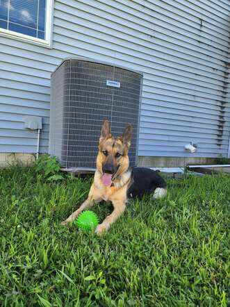

Introduction to my dog, Kiyoshi
Kiyoshi is a German Shepherd, that my family and I adopted in September 2020 during the pandemic. She's very energetic, and loves to play ball, fetch, and free-roam hiking when my sisters and I have time to take her to Wildcat Den. Since having Kiyoshi, she has been one of my main supporters throughout my entire college career, and looking at her gives me so much energy to get through the day. Therefore, I'm happy to provide some free dog serotonin, and not just because I love showing people my pride and joy.